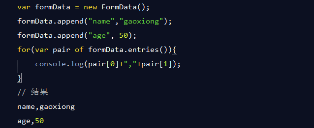
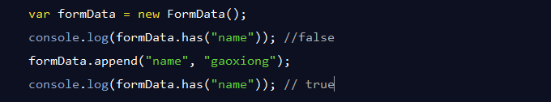
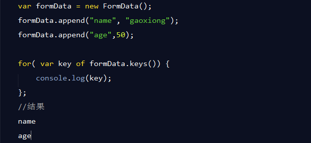

XMLHttpRequest Level 2 添加了一个新的接口FormData.利用FormData对象,我们可以通过JavaScript用一些键值对来模拟一系列表单控件,我们还可以使用XMLHttpRequest的send()方法来异步的提交这个"表单".比起普通的ajax,使用FormData的最大优点就是我们可以异步上传一个二进制文件.
var formData = new FormData();
创建一个空FormData对象
var formData = new FormData(form);
基于一个 form dom 创建FormData对象，该对象会携带form元素中的键值。
formData.append(key,value);
formData.append(key,value,filename);
当value为一个文件或二进制数据时（都属于流文件），filename表示流文件的文件名。
当value为file文件时，filename默认值为file.filename()
当value为Blob二进制数据时，filename默认值为"blob"
用法：删除指定key对应的键值
formData.delete(key);
formData.entries();
The FormData.entries() 方法返回一个 iterator对象 ，此对象可以遍历访问FormData中的键值对。其中键值对的key是一个 USVString 对象；value是一个 USVString , 或者 Blob对象。
formData.get(key);
FormData的get()方法用于返回FormData对象中和指定的键关联的第一个值，如果你想要返回和指定键关联的全部值，那么可以使用getAll()方法。
formData.getAll(key);
formData.has(key);
return: boolean 表示是否含有key
formData.keys();
